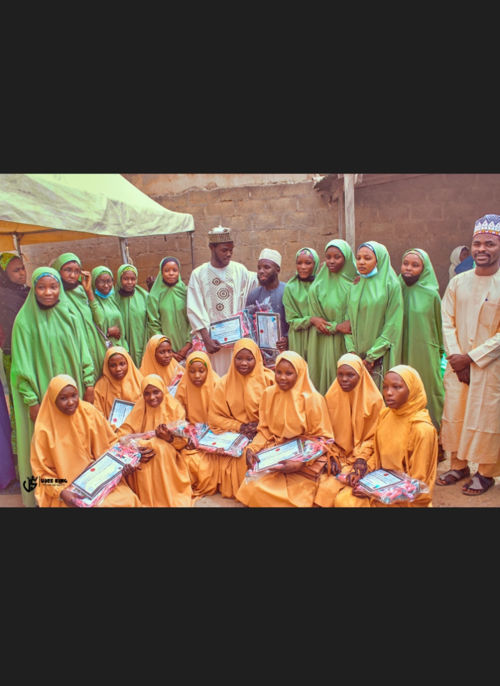
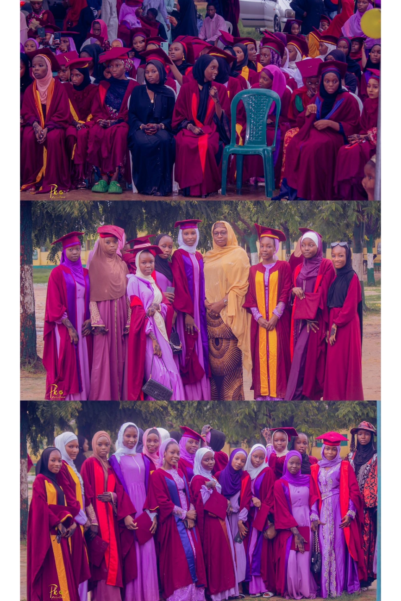

Throughout my life, I have experienced many memorable moments that have shaped my journey and personal growth. Among them, two memories stand out as the most special to me.

One of my most cherished memories is my Qur'an Memorization Ceremony. This occasion marked an important milestone in my Islamic education and remains a source of pride and gratitude. The ceremony celebrated my dedication, hard work, and commitment to learning the Holy Quran.

Another unforgettable memory is my Senior Secondary Certificate Examination (SSCE) Graduation Day. It was a joyful occasion that marked the completion of an important stage of my education. Celebrating this achievement with my classmates, teachers, friends, and family made the day truly special and memorable.
These experiences continue to inspire me as I pursue my academic and personal goals.